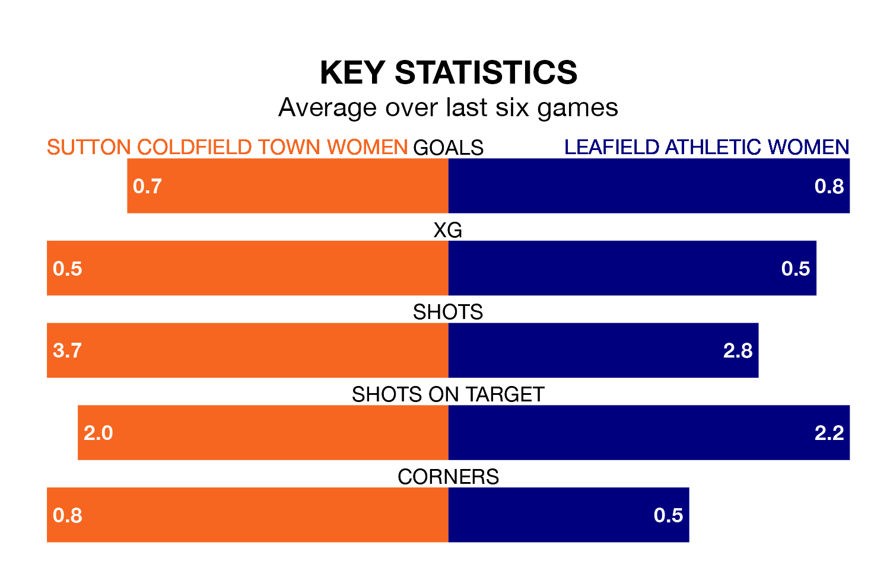

Leafield Athletic Women come to play Sutton Coldfield Town Women on late Tuesday in terrible form, having collected just two points from their last six games.
The visitors have drawn two and lost four of their last six fixtures, while Sutton Coldfield Town have two wins and two draws.
Leafield Athletic are bottom of the table after 14 games, of which they have won one and drawn three, earning six points.
Sutton Coldfield Town are five places ahead of the away team in seventh, with five wins and three draws putting them on 18 points.
With 12 goals in 14 games so far this season, Leafield Athletic are the league's second-lowest scorers with 0.9 goals per game. And they are conceding more than average, letting in 36 goals at a rate of 2.6 per game.
The hosts are also below average scorers, with 1.4 goals per game, compared to a league average of 1.8. They have conceded 1.5 goals per game.
Over the last two years, Sutton Coldfield Town and Leafield Athletic have played each other twice. Sutton Coldfield Town won one of them and they drew the other.
Their last meeting was on September 6, when Sutton Coldfield Town won 3-1 away.
Sutton Coldfield Town's last match was on February 11, a 0-0 draw against Solihull Moors Women.
Leafield Athletic lost 5-1 against Peterborough United Women last time out, on February 4.
Updated: 12:06 (UTC), 15/02/24